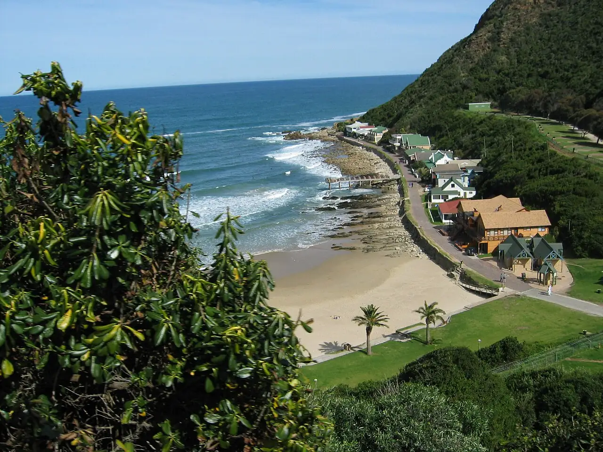

Victoria Bay
Garden Route, Afrique du Sud · surf, baignade

Petite crique encaissée entre George et Wilderness, avec une plage minuscule et une droite de pointe réputée de la côte sud. La vague déroule le long des rochers et fonctionne par houle de sud-ouest.
- Lieu
- Garden Route, Afrique du Sud
- Niveau
- Intermédiaire
- Activités
- surf, baignade
- Type d'eau
- Mer / océan
- Coordonnées
- -34.00, 22.55 (position approximative du secteur)
Dangers à connaître
- Vague qui casse près des rochers de la pointe.
- Line-up étroit et très fréquenté le week-end.
Le conseil d'Ocean Buddy
Le pic est étroit et vite chargé : observe où les locaux entrent et sortent avant de te mettre à l’eau.
Ouvrir dans Ocean Buddy Télécharger sur l'App Store
Source : Fiche Ocean Buddy · septembre 2026 · à vérifier localement.